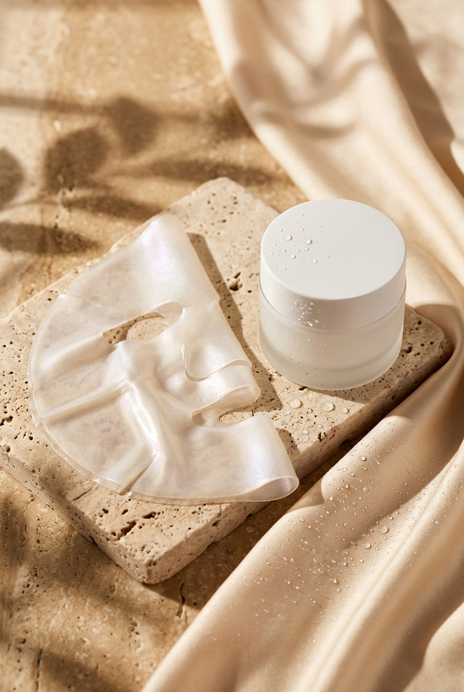

4.6★ (48K+) · $19 · ASIN B0B2RM68G2
BIODANCE Bio-Collagen Real Deep Overnight Hydrogel Mask (4-Pack)
Wake up with bouncy, poreless Korean glass skin ✨ The viral BIODANCE Bio-Collagen Real Deep Mask goes on milky-white before bed and melts crystal-clear overnight as 34g of oligo-hyaluronic acid and low-molecular collagen plump fine lines and tighten pores. • Zero sticky pillow mess — peels off completely transparent • Deep barrier hydration + probiotic pore smoothing • 48,000+ rave K-Beauty reviews under $20 Tap to shop the exact BIODANCE mask on Amazon ($19) + 30% off spa bundle. #koreanskincare #glassskin #collagenmask #ad #affiliate